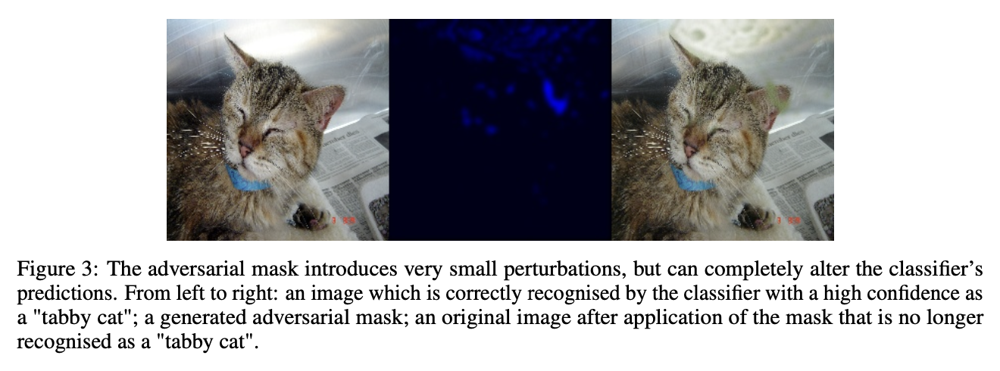
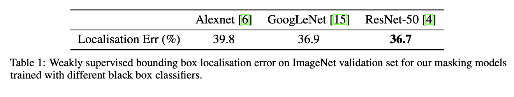
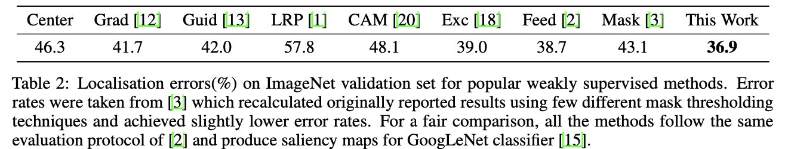
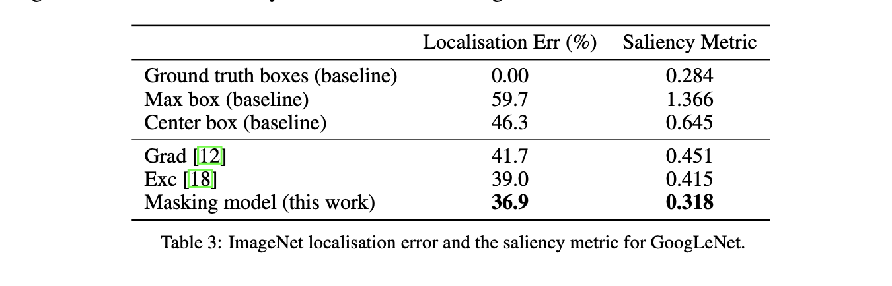

Real Time Image Saliency for Black Box Classifiers
Piotr Dabkowski
Yarin Gal
@dabkowskiRealTimeImage2017
TL;DR
New metric to judge how good a saliency map is using the largest rectangle that can define it. Training to reduce adversarial artefacts introduced due to masking with non smooth masks
Abstract
fast saliency detection method that can be applied to any differentiable image classifier
masking model
manipulate the scores of the classifier by masking salient parts of the input image
requires a single forward pass to perform saliency detection
In order to be as informative as possible we would like to find a region that performs well as both SSR and SDR.
Both SDR and SSR remove some evidence from the image
there are few ways of removing evidence, for example by blurring the evidence, setting it to a constant colour, adding noise, or by completely Cropping out the unwanted parts
Unfortunately, each one of these methods introduces new evidence that can be used by the classifier as a side effec
Fighting the Introduced Evidence

by manipulating the image we always introduce some extra evidence applying a mask M to the image X to obtain the edited image E
the simplest case we can simply multiply X and M element-wise:
E=X⊙M
This operation sets certain regions of the image to a constant “0” colour
While setting a larger patch of the image to “0” may sound rather harmless (perhaps following the assumption that the mean of all colors carries very little evidence), we may encounter problems when the mask M is not smooth
in the worst case, can be used to introduce a large amount of additional evidence by generating adversarial artifacts
Adversarial artifacts generated by the mask are very small in magnitude and almost imperceivable for humans, but they are able to completely destroy the original prediction of the classifier
we may change the way we apply a mask to reduce the amount of unwanted evidence due to specifically-crafted masks
E=X⊙M+A⊙(1−M)
where A is an alternative image
A can be chosen to be for example a highly blurred version of X
In such case mask M simply selectively adds blur to the image X and therefore it is much harder to generate high-frequency-high-evidence artifacts
Unfortunately, applying blur does not eliminate existing evidence very well, especially in the case of images with low spatial frequencies like a seashore or mountains.
Another reasonable choice of A is a random constant colour combined with highfrequency noise. This makes the resulting image E more unpredictable at regions where M is low and therefore it is slightly harder to produce a reliable artifact.
encourage smoothness of the mask M for example via a total variation (TV) penalty
We can also directly resize smaller masks to the required size as resizing can be seen as a smoothness mechanism.
A New Saliency Metric
In order to make sure that the preserved region is free from adversarial artifacts instead of masking we can crop the image.
We propose to find the tightest rectangular crop that contains the entire salient region and to feed that rectangular region to the classifier to directly verify whether it is able to recognise the requested class
s(a,p)=log(a∼)−log(p)
a∼=max(a,0.05)
Here a is the area of the rectangular crop as a fraction of the total image size and p is the probability of the requested class returned by the classifier based on the cropped region.
The metric is almost a direct translation of the SSR
We threshold the area at 0.05 in order to prevent instabilities at low area fractions.
Good saliency detectors will be able to significantly reduce the crop size without reducing the classification probability, and therefore a low value for the saliency metric is a characteristic of good saliency detectors.
this measure can be seen as the relative amount of information between an indicator variable with probability p and an indicator variable with probability a—or the concentration of information in the cropped region.
Because most image classifiers accept only images of a fixed size and the crop can have an arbitrary size, we resize the crop to the required size disregarding aspect ratio
The Saliency Objective
want to find a mask M that is smooth and performs well at both SSR([SSR].md) and SDR
given class c of interest, and an input image X, to find a saliency map M for class c, our objective function L is given by
fc is a softmax probability of the class c of the black box image classifier and TV(M) is the total variation of the mask defined simply as
TV(M)=Σi,j(Mij−Mij+1)2+Σij(Mij−Mi+1j)2
AV(M) is the average of the mask elements, taking value between 0 and 1, λi are regularisers
function Φ removes the evidence from the image as introduced in the previous section
Φ(X,M)=X⊙M+A⊙(1−M)
In total, the objective function is composed of 4 terms. The first term enforces mask smoothness, the second term encourages that the region is small. The third term makes sure that the classifier is able to recognise the selected class from the preserved region. Finally, the last term ensures that the probability of the selected class, after the salient region is removed, is low
Setting λ4 to a value smaller than 1 (e.g. 0.2) helps reduce this probability to very small values.
Masking Model
The mask can be found iteratively for a given image-class pair by directly optimising the objective function
Unfortunately, iteratively finding the mask is not only very slow, as normally more than 100 iterations are required, but it also causes the mask to greatly overfit to the image and a large TV penalty is needed to prevent adversarial artifacts from forming
Therefore, the produced masks are blurry, imprecise, and overfit to the specific
image rather than capturing the general behaviour of the classifie
develop a trainable masking model that can produce the desired masks in a single forward pass without direct access to the image classifier after training
The masking model receives an image and a class selector as inputs and learns to produce masks that minimise our objective function
In order to succeed at this task, the model must learn which parts of the input image are considered salient by the black box classifier
n theory, the model can still learn to develop adversarial masks that perform well on the objective function, but in practice it is not an easy task, because the model itself acts as some sort of a “regulariser” determining which patterns are more likely and which are less.
so that the masking model can use feature maps from multiple resolutions
The ResNet-50 model contains feature maps of five different scales, where each subsequent scale block downsamples the input by a factor of two
The purpose of the feature filter is to attenuate spatial locations which contents do not correspond to the selected class.
Therefore, the feature filter performs the initial localisation, while the following upsampling blocks fine-tune the produced masks
The output of the feature filter Y at spatial location i, j is given by:
Yij=Xijσ(XijTCs)
Xij is the output of the Scale 5 block at spatial location i, j; Cs is the embedding of the selected class s and σ(⋅) is the sigmoid nonlinearity. Class embedding C can be learned as part of the overall objective.
The upsampler blocks take the lower resolution feature map as input and upsample it by a factor of two using transposed convolution
afterwards they concatenate the upsampled map with the corresponding feature map from ResNet and follow that with three bottleneck blocks
Finally, to the output of the last upsampler block (Upsampler Scale 2) we apply 1x1 convolution to produce a feature map with with just two channels
The mask Ms is obtained from
Ms=abs(Co)+abs(C1)abs(Co)
We use this nonstandard nonlinearity because sigmoid and tanh nonlinearities did not optimise properly and the extra degree of freedom from two channels greatly improved training
Training Process
train the masking model to directly minimise the objective function
he weights of the pre-trained ResNet encoder (red blocks in figure 4) are kept fixed
during the training.
sometimes supply a class selector for a fake class and to apply only the area penalty term of the objective function.
Under this setting the model must pay attention to the class selector, as the only way it can reduce loss in case of a fake label is by setting the mask to zero
During training, we set the probability of the fake label occurrence to 30%
One can also greatly speed up the embedding training by ensuring that the maximal value of σ(XijTCs) from equation 7 is high in case of a correct label and low in case of a fake label.
evidence removal function Φ(X,M)
In order to prevent the model from adapting to any single evidence removal scheme the alternative image A is randomly generated every time the function is called
In 50% of cases the image A is the blurred version of X (we use a Gaussian blur with = σ=10 to achieve a strong blur) and in the remainder of cases, A is set to a random colour image with the addition of a Gaussian noise.
Such a random scheme greatly improves the quality of the produced masks as the model can no longer make strong assumptions about the final look of the image.
ImageNet
three different black-box classifiers: AlexNet [6], GoogLeNet [15] and ResNet-50 [4]
These models are treated as black boxes
The selected parameters of the objective function are λ1=10,λ2=103,λ3=5,λ4=0.3
The first upsampling block has 768 output channels and with each subsequent upsampling block we reduce the number of channels by a factor of two. We train each masking model as described in section 4.1 on 250,000 images from the ImageNet training set.
The masks produced by models trained on GoogLeNet and ResNet are sharp and precise and would produce accurate object segmentations. The saliency model trained on AlexNet produces much stronger and slightly larger saliency regions, possibly because AlexNet is a less powerful model which needs more evidence for successful classification.
Results



Future Research
modifying the approach to produce high quality, weakly supervised, image segmentations
Moreover, because our model can be run in real-time, it can be used for video saliency detection to instantly explain decisions made by black-box classifiers such as the ones used in autonomous vehicles
Lastly, our model might have biases of its own — a fact which does not seem to influence the model performance in finding biases in other black boxes according to the various metrics we used